Numeric Computation
Written by John Mccutchan
Performance matters to everyone. It directly impacts your bottom line, conversion rates, and user satisfaction. Just following a few simple rules can give you 50-100% speed improvements.
Follow the guidelines in this article to get the most performance from the Dart VM in numerical applications. You’ll learn about the four different number representations, how integer and floating-point numerical computation occurs, and how to pick the best container for your data.
This article focuses on the Dart VM. If your primary compile target is JavaScript, see the section Considerations when Dart is compiled to JavaScript.
Overview
The Dart language has two numeric types: int and double. The former is an arbitrary-precision signed integer, and the latter is the IEEE-754 double-precision floating-point number. Examples:
int speed = 3232943523452345329384234242323523;
int hitPoints = 21;
double position = 32.43432;
double hp = hitPoints.toDouble();
Integers
While the language specifies an arbitrarily sized integer, for performance reasons the VM has three different internal integer representations: smi (rhymes with pie), mint, and bigint. Each representation is used to hold different ranges of integer numbers (see the table). The VM automatically switches between these representations behind the scenes as numbers grow and shrink in range.
| Internal representation | smi (small integer) | mint (medium integer) | bigint |
|---|---|---|---|
| Minimum value | -230 (on a 32-bit machine)
-262 (on a 64-bit machine) |
-263 | Limited by RAM |
| Maximum value | 230 - 1 (on a 32-bit machine)
262 - 1 (on a 64-bit machine) |
263 - 1 | Limited by RAM |
Here is an example of how a single integer value in the VM graduates from smi to mint to bigint:
main() {
int hitPoints = 21; // starts as a smi
print(hitPoints); // 21
hitPoints += potionOfSuperHealth.points; // becomes a mint
print(hitPoints); // 2133232342342423
hitPoints += spellOfNearlyInvinciblity.points; // becomes a bigint
print(hitPoints); // 99999999999999999999999999999999999999999
}
Floating-point numbers
The VM has a single representation for floating-point numbers, the IEEE-754 double-precision floating-point number.
Boxed and unboxed numbers
In Dart, everything is an Object, even numbers. If you come from a C/C++ background, this might surprise you. The result of any arithmetic or bitwise operation results in a new number object. Allocating a new object to store the result of a numeric operation is inefficient, and for that reason, the VM employs an optimization technique called unboxing. Unboxed numbers sit inside CPU registers. The results of all numeric and bitwise operations on unboxed numbers are also held in CPU registers, avoiding most of the overhead of numbers represented as objects.
Presently the VM supports unboxed double and mint. The VM employs a trick called tagging so that it can box and unbox smi values without allocating memory or loading the value from a object. More on this later.
Lists of numbers
Dart has two ways to store lists of numeric data: object lists and typed lists.
Object lists
A List stores a list of objects. Examples include:
var a = [ 1.0, 2.0, 3.0 ];
var b = new List(3); // Create a new list with a fixed length of 3.
b[0] = 5;
b[1] = 99;
b[2] = 34;
The list b is an object list,
meaning it can store any object—for example, a String object or null.
This means that each entry in a List is as wide as the CPU’s pointer type.
Typed lists
Dart offers typed lists that store only numbers. These lists are available in the dart:typed_data library. Typed lists can store only numbers and cannot hold regular objects or have a null entry. The dart:typed_data library has a distinct list for each common integer size, as well as for 32-bit and 64-bit floating-point numbers. When working with numbers that are smaller than the pointer width, these lists can have considerable memory savings. Some examples:
var a = new Float64List(3);
a[0] = 1.0;
a[1] = 2.0;
a[2] = 3.0;
var b = new Int8List(3);
b[0] = 5;
b[1] = 99;
b[2] = 34;
In both the object list and typed list examples,
the lists named a are holding the same values.
Same for the lists named b.
What’s different is how the values are stored in memory
and how they are accessed.
More on this later.
Pulling back the curtains
The deep dive begins. This section covers the above concepts in more detail and provides actionable tips.
Integers
The Dart VM has multiple internal representations of integer values. The following sections explain each one and how to efficiently perform left shifts.
Smis and mints
Remember that the VM has three different integer representations, switching between them automatically depending on the size of an integer. This section focuses on smi and mint.
The first representation, smi, is the same size as a pointer on your platform, minus 1 bit. On a 32-bit machine, a smi holds a 31-bit signed integer. On a 64-bit machine, a smi holds a 63-bit signed integer. A smi doesn’t require a memory allocation to be created and is stored directly in a field. The VM can do this by storing twice the numeric value, guaranteeing the low bit being 0. For all other objects (including boxed doubles, mints, and bigints), the low bit will be 1. The VM uses this low bit to distinguish between smis and all other objects.
Because the stored smi is twice the numeric value, the value must be right shifted by 1 before operated on; this is called untagging. Conversely, after being operated on the value must be added with itself (equivalent of a multiplication by 2); this is called tagging. Despite these extra operations, a smi is very efficient because it never requires a memory allocation and all accesses are direct, avoiding dependent loads. Note that many common operations—for example, addition—do not require the smi to be untagged.
Consider an object called entity, defined as follows:
class Entity {
Entity() {
scale = 2;
x = 3;
y = 0x40000000;
}
int scale;
int x;
int y;
}
Entity entity = new Entity();
After the above code executes,
in memory on a 32-bit machine the entity object looks like this:
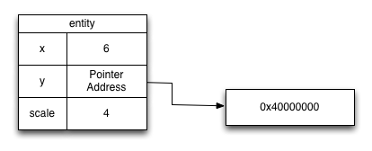
Now consider this Dart code:
entity.x = entity.x * entity.scale;
It’s converted into the VM instructions shown in the following figure. Each VM instruction can return a value shown as v1, v2, and so on.
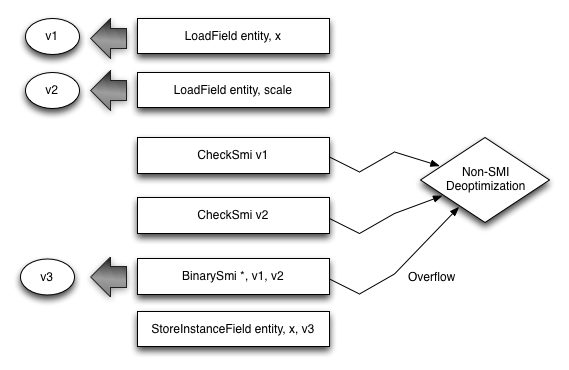
After that code executes, in memory the entity object looks like this:
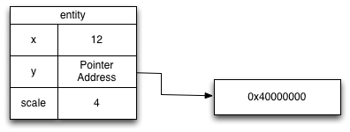
Now consider the second representation, mint, which holds a 64-bit signed integer. When stored, a mint does require a memory allocation. The field a mint is stored into holds the address of the mint instance. When loading a mint value, the CPU must first load the address where the mint is stored before loading the actual value.
The following Dart code is converted into the VM instructions shown below.
entity.y = entity.y + entity.x;
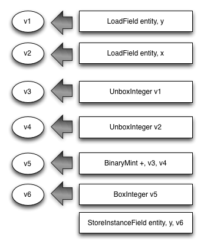
After that code executes, in memory the entity object looks like this:
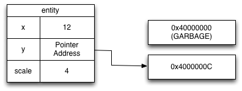
Performance tip: If you can, stay in smi range. Small machine integers fit in a register and can be loaded and stored directly in the field instead of being fetched from memory. They also never require memory allocation. Note: The smi range depends on the CPU architecture.
Optimally shifting to the left
Left shifts are used for both arithmetic and logical operations. When shifting to the left, you must be careful that the values remain in smi range. The VM performs an optimization when it sees a left shift masked with a constant smi value:
result = (int1 << int2) & CONSTANT; // CONSTANT within smi range
For example:
a = (b << c) & 0x3FFFFFFF;
The VM knows that the result can be stored in a smi, and it generates code that doesn’t check whether a mint is needed to store the result. The constant 0x3FFFFFFF is the maximum positive smi on 32-bit architectures. 0x3FFFFFFFFFFFFFFF is the equivalent constant on 64-bit architectures. The constant does not have to be 0x3FFFFFFF; it can be any constant that is a smi.
Performance tip: Because the smi range is variable, assume a 31-bit range unless you require more bits.
Pro tip: Hexadecimal constants are signed in Dart, so you must prefix the hexadecimal constant with a minus sign if you want it to be negative. On a 32-bit machine, the largest negative number that is still a smi is -0x40000000; the largest positive number that is still a smi is 0x3FFFFFFF.
Lists of integers
When a smi is loaded or stored into an object list (List) the smi value, unaltered, is copied into the list. This is the most efficient way to load and store integers within the smi range. In contrast, loading and storing a smi into a typed list (dart:typed_data) requires the smi to be untagged and tagged, respectively. These operations can add overhead when working with typed lists.
Consider the following code, assuming that all integer variables stay within the smi range:
for (int i = 0; i < list.length; i++) {
list[i] = list[i] + b;
}
If list is an object list,
no smi tagging or untagging occurs.
Note that some integer operations—for example,
addition—can work on tagged smi values while others—for example,
multiplication—must first untag the smi values.
If list is a typed list,
the loaded value must be tagged and then,
before the result is stored,
it must be untagged.
Furthermore, the index (i)
into a typed list is untagged and then tagged.
Performance tip: When working within the smi range, consider using an object list instead of a typed list, to improve speed.
However, you might want to use a typed list instead of an object list because typed lists have a smaller GC impact and better CPU cache performance:
-
Because typed lists can never store an object reference, the garbage collection load for typed lists is very low. In contrast an object list must be scanned, and each entry is checked for an object pointer.
-
Typed lists can be much more dense. For example, if you know you need only 8 bits of precision you can use an Int8List, using much less memory and making better use of your CPU’s cache.
In general and specifically because of the above caveats, it is always a good idea to benchmark your algorithm using both object and typed lists.
Performance tip: If possible, avoiding storing integers outside the smi range in typed lists. When an integer is loaded from a typed list that can hold integer values outside of the smi or mint range, a check must be done and an object may be allocated. Int32List and Uint32List can hold numbers that are bigger than a smi on 32-bit architectures. Int64List and Uint64List can hold numbers that are bigger than a mint, resulting in a bigint on all platforms!
Bigints
The third integer representation, bigint, holds an arbitrarily large signed integer. The field a bigint is stored into holds the address of the bigint instance. When loading a bigint, the entire numeric value does not fit inside a CPU register, and the CPU does not have instructions for operations on bigint values. Thus, bigints are significantly more expensive than smis or mints.
Performance tip: Avoid bigint whenever possible. The VM doesn’t optimize operations on bigint instances.
Doubles
Computations involving double values are unboxed, making them very efficient.
Lists of doubles
When a double is stored into an object list, it must be boxed, which requires a memory allocation and a memory store.
Two typed lists support double-precision values: Float32List and Float64List. The trade-off between the two lists is storage density versus the conversion cost. Float32List is twice as dense as Float64List, but values loaded from a Float32List must be converted to a double-precision number. Conversely, doubles must be converted to a single-precision number on storage in a Float32List.
Performance tip: Use Float32List or Float64List whenever you store lists of double values. Unlike the case with smis, using an object list with doubles is always slower.
Performance tip: Benchmark your application using both Float32List and Float64List to determine which performs best.
Boxing
Boxing is the operation of moving a scalar value from a register and placing it inside a Dart object. Unboxing is the opposite: taking the scalar value stored inside a Dart object and placing it inside a register to be operated on.
Boxing is expensive and something that you want to avoid in the middle of numeric computation. The following operations can trigger a number to be boxed:
-
Passing a number to another function. Functions accept only boxed objects, so if you pass an unboxed number to a function, the number will be boxed first.
-
Returning a number from a function. Functions can return only boxed objects, so if you return an unboxed number from a function, the number will be boxed first.
-
Storing a non-smi number to a field. Fields can hold only smi values or object pointers.
Boxing requires a memory allocation and a store. Unboxing requires a load.
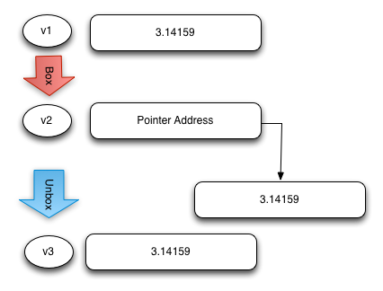
Lists
Remember, two kinds of list can store numeric data—the object list and the typed list. This section tells you how list data is laid out in memory and how loading and storing work.
Object lists (instances of List)
At runtime, an object list (a List) is an array of pointers. Each entry in the array holds a pointer to the number stored in that entry. The only exception is smi, which fits in the memory used to store the pointer. When type checking is not enforced, object lists can hold objects of any type. Object lists can contain the null object.
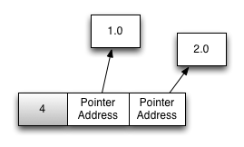
Loading a number from an object list works like this:
-
The base address of the backing store for the list is calculated. (For growable lists, this includes a dependent load.)
-
The address of the number or the tagged smi is loaded from the list backing store.
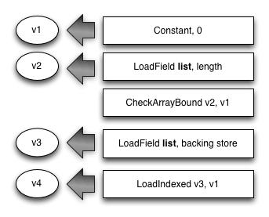
Storing a number into an object list works like this:
- If the number is not a smi, a new number instance is allocated.
- The base address of the backing store for the list is calculated. (For growable lists, this includes a dependent load.)
- The address of the number or the tagged smi value is stored in the list backing store.
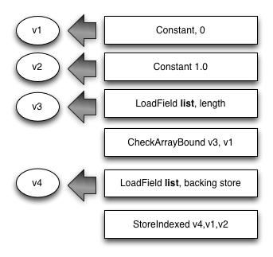
Typed lists
At runtime, a typed list is an array of numeric values. Each entry in the array always holds the value directly. Typed lists can be much denser, providing better memory and CPU cache usage. Typed lists are also faster to process at garbage collection time because they don’t have to be scanned for object pointers.
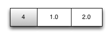
Loading a double-precision number from a typed data list works like this:
- The base address of the backing store for the list is calculated. (For transferrable lists, this includes a dependent load.)
- The value is loaded from the list backing store.
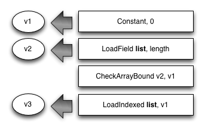
Storing a double-precision number into a typed data list works like this:
- The base address of the backing store for the list is calculated. (For transferrable lists, this includes a dependent load.)
- The double number is stored into the list backing store.
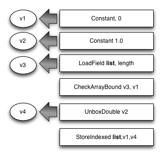
Loading an integer number from a typed list can be more expensive than the double case in the following two cases:
-
The number retrieved from the list is outside smi range but inside mint range. In this case a mint must allocated to store the number. This case is possible with Int32List, Uint32List, Int64List, and Uint64List. Optimized code can avoid the mint allocation by loading directly into an unboxed mint.
-
The number retrieved is outside mint range. In this case a bigint must be allocated to store the number. This case is possible with Int64List and Uint64List.
Note that loading or storing a smi into a typed list requires that the value be tagged or untagged, respectively.
Performance tip: Flatten multiple-dimension lists into a single list, and compute the flattened index at runtime. This way you avoid the expense of dealing with a list of lists.
Considerations when Dart is compiled to JavaScript
JavaScript has only one number representation: an IEEE-754 double-precision floating-point number. This means that any number—integer or floating point—is represented as a double. JavaScript has typed data arrays, and the mapping from native Dart typed lists to JavaScript typed arrays is trivial.
Integer precision
Because all numbers are stored as doubles, integers are restricted to a 53-bit precision. Integer values in the range of -253 to 253 can be stored without loss of accuracy. Because JavaScript VMs play tricks with the internal representation of numbers (similar to those described above), staying within smi range is still good practice.
Typed lists
JavaScript offers typed arrays that are compatible with Dart’s typed lists. The mapping is trivial—for example, Float32List becomes a Float32Array. The one exception today is that dart2js does not support 64-bit integers and thus does not support Int64List or Uint64List. Dart code compiled via dart2js results in a runtime exception if either of those lists is used.